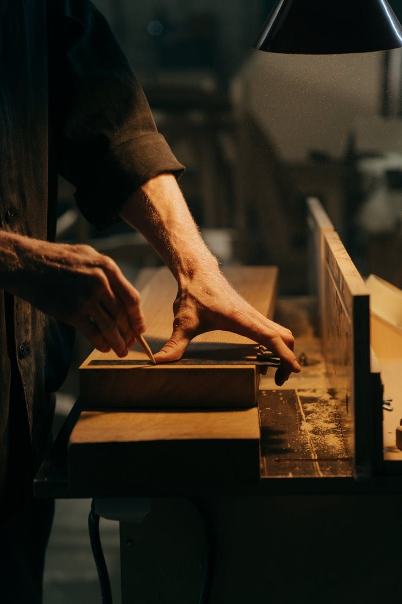
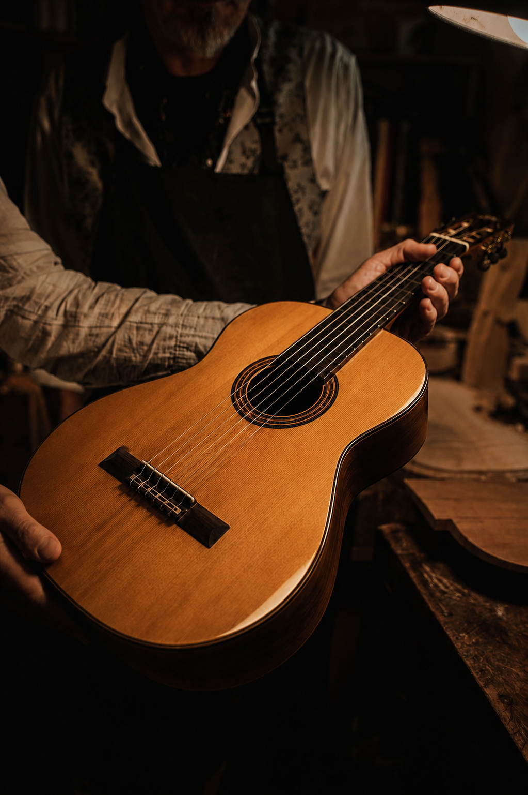
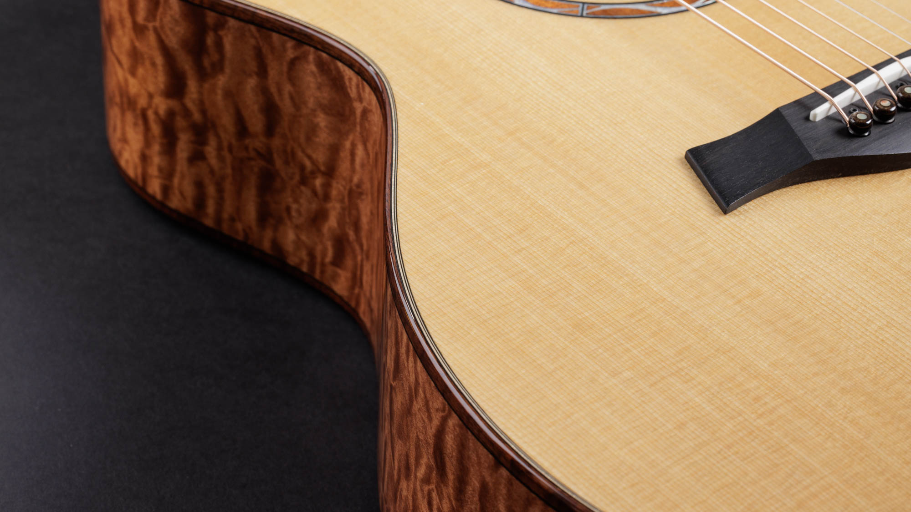
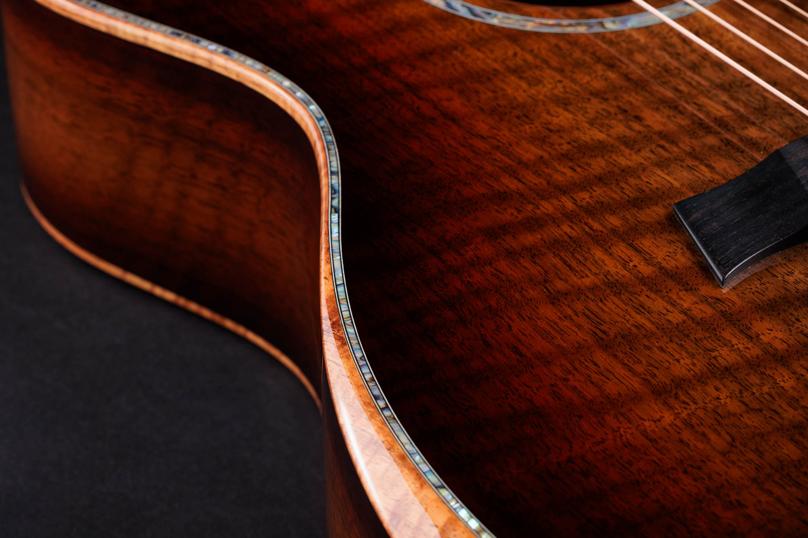
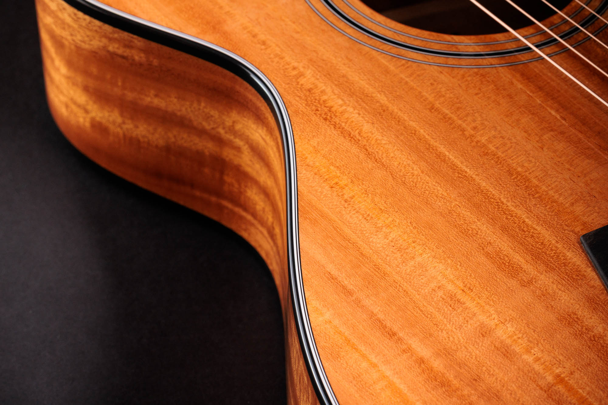
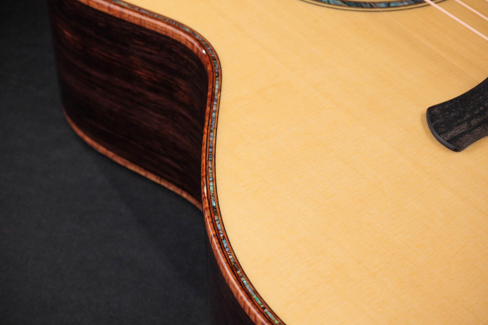
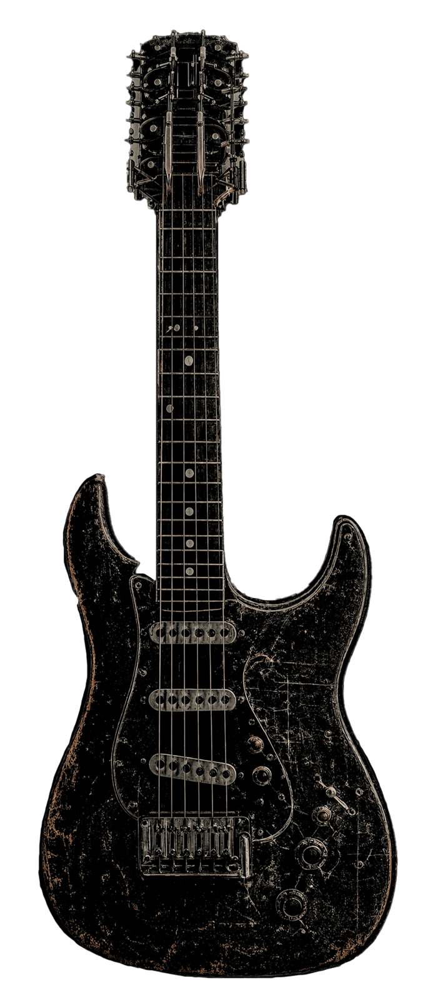

Producción en serie
Producción en serie
- Masivo
- Repetitivo
- Estándar
- Impersonal
Forjá tu propia guitarra eléctrica desde cero. Con tus manos. Con tu idea.
No hacemos guitarras en serie.
Forjamos la tuya.
En un mundo de instrumentos clonados, cada pieza que sale de este taller es irrepetible: pensada con vos, tallada a mano y afinada a tu manera de tocar. Quedate si buscás un sonido que nadie más pueda tener.
Cada traste nivelado a mano, cada veta elegida por su sonido. Sin líneas de montaje, sin atajos.
Solo 12 instrumentos al año. Escasez real por la capacidad del taller, no una táctica de venta.
Madera viva y bobinado manual de pastillas: tu tono no existe en ningún catálogo del mundo.
Mientras la industria fabrica miles de instrumentos idénticos, la luthería sigue apostando por la creación consciente, el oficio y la identidad propia.
Hacelo vos mismo.
Adueñate de tu sonido.
Producción en serie


Luthería de AutorNo comprés un instrumento más. Forjá el único que será tuyo.
Anotarme al tallerTu instrumento empieza por la madera, y ninguna suena igual. No hay un sonido «estándar» en este taller.
Elegí la tuya y forjá tu propio camino, el que nadie más va a tener.
¿Cuánto define la madera el sonido?
La madera define el 60% del carácter tonal del instrumento. El otro 40% lo forjás vos al tocarlo.
Las maderas del taller · tocá cada una para conocer su carácter

ArceBrillante, denso y de gran sustain. Agudos definidos y ataque rápido; su veta flameada lo hace tan visual como sonoro. Clásico para mástiles y tapas.

NogalCálido y equilibrado, a mitad de camino entre la caoba y el arce. Medios cremosos, bajos firmes y una veta oscura y elegante. Versátil para todo estilo.

CaobaRica, oscura y con cuerpo. Enfatiza los medios-bajos y genera un sustain largo y cálido: el material de los sonidos más icónicos del rock y el blues.

CedroCálido y resonante. Aporta claridad en los agudos con un cuerpo medio pronunciado: calidez sin sacrificar proyección.
Toca los puntos rojos para explorar cada componente. Ingeniería al servicio del arte.

Nivel y coronado manual con piedra de agua japonesa. Tolerancia de ±0.01mm. Disponibles en níquel-plata o acero inoxidable 18%.
Tallada a mano desde hueso bovino de alta densidad. Cada ranura calibrada al diámetro exacto de las cuerdas elegidas.
Devanado artesanal con tensión de hilo controlada. Cada bobina produce un carácter sonoro único, no reproducible industrialmente.
Barra de acero de doble acción que permite ajustar la curvatura del mástil en ambas direcciones. Incluye calibración gratuita de por vida.
Mecanizado en bloque de aluminio aeronáutico o latón macizo. Silletas individualmente ajustables para intonación perfecta por cuerda.
El curso estrella se cursa en grupos reducidos de 12 personas. Cuando se llena, abrimos lista de espera para la camada siguiente.
Solo quedan 3 cupos para la camada que arranca en marzo 2026. La seña asegura tu lugar.
Aprendé el oficio de la mano de un luthier. De cero a profesional, con tus propias manos.
De la madera en bruto al instrumento terminado. Diseño, corte, ensamblaje, electrónica, acabado y setup final. Te vas con tu propia guitarra hecha por vos.
Bobiná tus propias pastillas y dominá el cableado: circuitos, soldadura de precisión y modificaciones de tono.
Convertite en el técnico que todo músico busca: nivelado de trastes, acción, intonación y mantenimiento profesional.
"Tres años de gira con este instrumento. Humedad extrema en Brasil, frío en Islandia. Ni una desafinación estructural. Es una obra de ingeniería."
"El nivel de los trastes es quirúrgico. Cero ruido fantasma. Los técnicos de estudio preguntan qué guitarra es cuando escuchan el raw track."
"Encargué la versión de 7 cuerdas fanned frets para mi proyecto progresivo. La tensión entre cuerdas es perfectamente equilibrada. Te obliga a tocar mejor."
"El proceso de personalización fue transparente desde el primer depósito hasta la entrega. Seis meses de espera que valieron exactamente lo que prometieron."
Al confirmar el slot de producción se realiza un depósito del 20% del precio total. El 80% restante se abona en dos cuotas: 40% a mitad del proceso y 40% final al aprobar el instrumento terminado. El depósito es reembolsable al 100% si el luthier no puede cumplir con el slot comprometido.
El proceso completo toma entre 4 y 5 meses desde la apertura del slot. El cliente recibe actualizaciones fotográficas en cada fase con acceso a un panel de seguimiento privado.
Sí, durante las primeras 2 semanas posteriores al depósito es posible modificar sin costo adicional. Una vez iniciado el corte de madera, los cambios estructurales tienen un cargo según el alcance. Los cambios de hardware o electrónica pueden hacerse hasta la semana 10.
Sí, enviamos a todo el mundo. El costo de envío con seguro a valor declarado completo se calcula según el destino y se añade al presupuesto de forma transparente antes del depósito. Tiempos estimados: 7 a 14 días hábiles.
Incluye: ajuste de curvatura de mástil, ajuste de acción en cejilla y puente, intonación por cuerda y revisión de electrónica. Disponible para instrumentos Artisan Series y Master Reserve. Una vez al año, envío de retorno cubierto por el taller.
Sí. La cancelación es posible en cualquier momento. Antes del inicio de corte de madera se reembolsa el 100% del depósito. Durante la fabricación, el reembolso es proporcional a las horas ya trabajadas. El proceso de cancelación está disponible desde el panel de cliente con un solo clic.